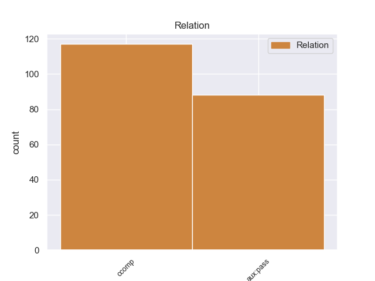
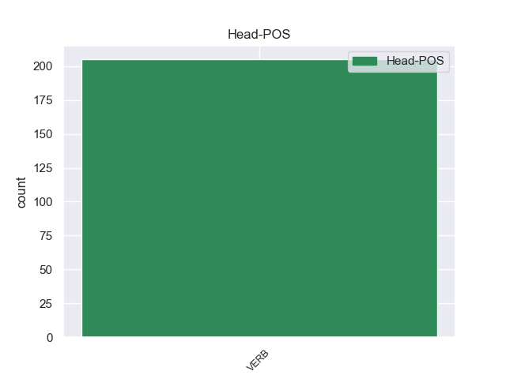
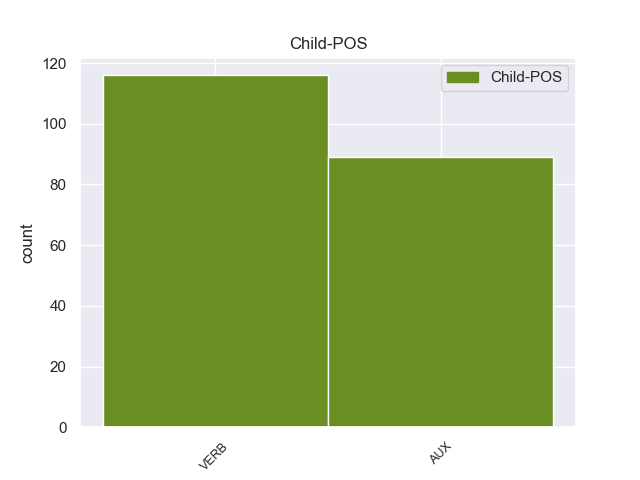

Distribution of features within this leaf



Agreement Rules sorted by frequency.
- When the dependent token is the passive auxiliary(aux:pass) of the head token,
1 También _ _ _ _ 0 _ _ _
2 fue ser AUX _ Mood=Ind|Number=Sing|Person=3|Tense=Past|VerbForm=Fin 3 aux:pass _ _
3 presentado presentado VERB _ Mood=Ind|Number=Sing|Person=3|Tense=Past|VerbForm=Fin 0 _ _ _
4 el _ _ _ _ 0 _ _ _
5 Mila _ _ _ _ 0 _ _ _
6 2 _ _ _ _ 0 _ _ _
7 , _ _ _ _ 0 _ _ _
8 una _ _ _ _ 0 _ _ _
9 versión _ _ _ _ 0 _ _ _
10 de _ _ _ _ 0 _ _ _
11 dos _ _ _ _ 0 _ _ _
12 plazas _ _ _ _ 0 _ _ _
13 . _ _ _ _ 0 _ _ _
1 El _ _ _ _ 0 _ _ _
2 representante _ _ _ _ 0 _ _ _
3 de _ _ _ _ 0 _ _ _
4 el _ _ _ _ 0 _ _ _
5 Frente _ _ _ _ 0 _ _ _
6 Cívico _ _ _ _ 0 _ _ _
7 en _ _ _ _ 0 _ _ _
8 Tribunal _ _ _ _ 0 _ _ _
9 de _ _ _ _ 0 _ _ _
10 Cuentas _ _ _ _ 0 _ _ _
11 de _ _ _ _ 0 _ _ _
12 la _ _ _ _ 0 _ _ _
13 provincia _ _ _ _ 0 _ _ _
14 de _ _ _ _ 0 _ _ _
15 Córdoba _ _ _ _ 0 _ _ _
16 , _ _ _ _ 0 _ _ _
17 José _ _ _ _ 0 _ _ _
18 Medina _ _ _ _ 0 _ _ _
19 , _ _ _ _ 0 _ _ _
20 denunció denunció VERB _ Mood=Ind|Number=Sing|Person=3|Tense=Past|VerbForm=Fin 0 _ _ _
21 que _ _ _ _ 0 _ _ _
22 el _ _ _ _ 0 _ _ _
23 gobierno _ _ _ _ 0 _ _ _
24 de _ _ _ _ 0 _ _ _
25 Schiaretti _ _ _ _ 0 _ _ _
26 pidió pidió VERB _ Mood=Ind|Number=Sing|Person=3|Tense=Past|VerbForm=Fin 20 ccomp _ _
27 autorización _ _ _ _ 0 _ _ _
28 para _ _ _ _ 0 _ _ _
29 realizar _ _ _ _ 0 _ _ _
30 reparaciones _ _ _ _ 0 _ _ _
31 en _ _ _ _ 0 _ _ _
32 la _ _ _ _ 0 _ _ _
33 Casa _ _ _ _ 0 _ _ _
34 de _ _ _ _ 0 _ _ _
35 las _ _ _ _ 0 _ _ _
36 Tejas _ _ _ _ 0 _ _ _
37 por _ _ _ _ 0 _ _ _
38 más _ _ _ _ 0 _ _ _
39 de _ _ _ _ 0 _ _ _
40 un _ _ _ _ 0 _ _ _
41 millón _ _ _ _ 0 _ _ _
42 de _ _ _ _ 0 _ _ _
43 pesos _ _ _ _ 0 _ _ _
44 el _ _ _ _ 0 _ _ _
45 pasado _ _ _ _ 0 _ _ _
46 19 _ _ _ _ 0 _ _ _
47 de _ _ _ _ 0 _ _ _
48 octubre _ _ _ _ 0 _ _ _
49 , _ _ _ _ 0 _ _ _
50 cuando _ _ _ _ 0 _ _ _
51 ya _ _ _ _ 0 _ _ _
52 estaba _ _ _ _ 0 _ _ _
53 la _ _ _ _ 0 _ _ _
54 decisión _ _ _ _ 0 _ _ _
55 de _ _ _ _ 0 _ _ _
56 demoler _ _ _ _ 0 _ _ _
57 el _ _ _ _ 0 _ _ _
58 edificio _ _ _ _ 0 _ _ _
59 . _ _ _ _ 0 _ _ _
Disagree Examples:
1 Un _ _ _ _ 0 _ _ _
2 portavoz _ _ _ _ 0 _ _ _
3 de _ _ _ _ 0 _ _ _
4 el _ _ _ _ 0 _ _ _
5 número _ _ _ _ 0 _ _ _
6 10 _ _ _ _ 0 _ _ _
7 de _ _ _ _ 0 _ _ _
8 Downing _ _ _ _ 0 _ _ _
9 Street _ _ _ _ 0 _ _ _
10 manifestó manifestar VERB _ Mood=Ind|Number=Sing|Person=3|Tense=Past|VerbForm=Fin 0 _ _ _
11 que _ _ _ _ 0 _ _ _
12 " _ _ _ _ 0 _ _ _
13 la _ _ _ _ 0 _ _ _
14 reunión _ _ _ _ 0 _ _ _
15 tratará tratar VERB _ Mood=Ind|Number=Sing|Person=3|Tense=Fut|VerbForm=Fin 10 ccomp _ _
16 una _ _ _ _ 0 _ _ _
17 serie _ _ _ _ 0 _ _ _
18 de _ _ _ _ 0 _ _ _
19 asuntos _ _ _ _ 0 _ _ _
20 , _ _ _ _ 0 _ _ _
21 incluida _ _ _ _ 0 _ _ _
22 la _ _ _ _ 0 _ _ _
23 asistencia _ _ _ _ 0 _ _ _
24 que _ _ _ _ 0 _ _ _
25 se _ _ _ _ 0 _ _ _
26 está _ _ _ _ 0 _ _ _
27 facilitando _ _ _ _ 0 _ _ _
28 a _ _ _ _ 0 _ _ _
29 los _ _ _ _ 0 _ _ _
30 británicos _ _ _ _ 0 _ _ _
31 que _ _ _ _ 0 _ _ _
32 no _ _ _ _ 0 _ _ _
33 pueden _ _ _ _ 0 _ _ _
34 volver _ _ _ _ 0 _ _ _
35 a _ _ _ _ 0 _ _ _
36 casa _ _ _ _ 0 _ _ _
37 y _ _ _ _ 0 _ _ _
38 las _ _ _ _ 0 _ _ _
39 implicaciones _ _ _ _ 0 _ _ _
40 que _ _ _ _ 0 _ _ _
41 esto _ _ _ _ 0 _ _ _
42 tiene _ _ _ _ 0 _ _ _
43 para _ _ _ _ 0 _ _ _
44 la _ _ _ _ 0 _ _ _
45 industria _ _ _ _ 0 _ _ _
46 " _ _ _ _ 0 _ _ _
47 . _ _ _ _ 0 _ _ _
1 Sin _ _ _ _ 0 _ _ _
2 dar _ _ _ _ 0 _ _ _
3 fechas _ _ _ _ 0 _ _ _
4 de _ _ _ _ 0 _ _ _
5 lanzamiento _ _ _ _ 0 _ _ _
6 , _ _ _ _ 0 _ _ _
7 Skype _ _ _ _ 0 _ _ _
8 aclara aclarar VERB _ Mood=Ind|Number=Sing|Person=3|Tense=Pres|VerbForm=Fin 0 _ _ _
9 que _ _ _ _ 0 _ _ _
10 su _ _ _ _ 0 _ _ _
11 software _ _ _ _ 0 _ _ _
12 para _ _ _ _ 0 _ _ _
13 iPad _ _ _ _ 0 _ _ _
14 mostrará mostrar VERB _ Mood=Ind|Number=Sing|Person=3|Tense=Fut|VerbForm=Fin 8 ccomp _ _
15 casi _ _ _ _ 0 _ _ _
16 las _ _ _ _ 0 _ _ _
17 mismas _ _ _ _ 0 _ _ _
18 opciones _ _ _ _ 0 _ _ _
19 que _ _ _ _ 0 _ _ _
20 la _ _ _ _ 0 _ _ _
21 versión _ _ _ _ 0 _ _ _
22 para _ _ _ _ 0 _ _ _
23 iPhone _ _ _ _ 0 _ _ _
24 , _ _ _ _ 0 _ _ _
25 pero _ _ _ _ 0 _ _ _
26 obviamente _ _ _ _ 0 _ _ _
27 diseñadas _ _ _ _ 0 _ _ _
28 para _ _ _ _ 0 _ _ _
29 la _ _ _ _ 0 _ _ _
30 pantalla _ _ _ _ 0 _ _ _
31 más _ _ _ _ 0 _ _ _
32 grande _ _ _ _ 0 _ _ _
33 . _ _ _ _ 0 _ _ _
1 Edward _ _ _ _ 0 _ _ _
2 Burnett _ _ _ _ 0 _ _ _
3 Tylor _ _ _ _ 0 _ _ _
4 sostenía sostenía VERB _ Mood=Ind|Number=Sing|Person=3|Tense=Past|VerbForm=Fin 0 _ _ _
5 que _ _ _ _ 0 _ _ _
6 las _ _ _ _ 0 _ _ _
7 sociedades _ _ _ _ 0 _ _ _
8 no _ _ _ _ 0 _ _ _
9 occidentales _ _ _ _ 0 _ _ _
10 usaban usaban VERB _ Mood=Ind|Number=Plur|Person=3|Tense=Pres|VerbForm=Fin 4 ccomp _ _
11 el _ _ _ _ 0 _ _ _
12 animismo _ _ _ _ 0 _ _ _
13 para _ _ _ _ 0 _ _ _
14 explicar _ _ _ _ 0 _ _ _
15 por _ _ _ _ 0 _ _ _
16 qué _ _ _ _ 0 _ _ _
17 sucedían _ _ _ _ 0 _ _ _
18 las _ _ _ _ 0 _ _ _
19 cosas _ _ _ _ 0 _ _ _
20 . _ _ _ _ 0 _ _ _
1 El _ _ _ _ 0 _ _ _
2 13 _ _ _ _ 0 _ _ _
3 de _ _ _ _ 0 _ _ _
4 noviembre _ _ _ _ 0 _ _ _
5 volvió _ _ _ _ 0 _ _ _
6 a _ _ _ _ 0 _ _ _
7 llover _ _ _ _ 0 _ _ _
8 en _ _ _ _ 0 _ _ _
9 Villahermosa _ _ _ _ 0 _ _ _
10 , _ _ _ _ 0 _ _ _
11 sin _ _ _ _ 0 _ _ _
12 embargo _ _ _ _ 0 _ _ _
13 , _ _ _ _ 0 _ _ _
14 la _ _ _ _ 0 _ _ _
15 Comisión _ _ _ _ 0 _ _ _
16 Nacional _ _ _ _ 0 _ _ _
17 de _ _ _ _ 0 _ _ _
18 el _ _ _ _ 0 _ _ _
19 Agua _ _ _ _ 0 _ _ _
20 , _ _ _ _ 0 _ _ _
21 reportó reportó VERB _ Mood=Ind|Number=Sing|Person=3|Tense=Past|VerbForm=Fin 0 _ _ _
22 que _ _ _ _ 0 _ _ _
23 el _ _ _ _ 0 _ _ _
24 Río _ _ _ _ 0 _ _ _
25 Grijalva _ _ _ _ 0 _ _ _
26 estaba estaba VERB _ Mood=Ind|Number=Sing|Person=3|Tense=Imp|VerbForm=Fin 21 ccomp _ _
27 a _ _ _ _ 0 _ _ _
28 unos _ _ _ _ 0 _ _ _
29 4 _ _ _ _ 0 _ _ _
30 cm _ _ _ _ 0 _ _ _
31 de _ _ _ _ 0 _ _ _
32 ubicar _ _ _ _ 0 _ _ _
33 se _ _ _ _ 0 _ _ _
34 por _ _ _ _ 0 _ _ _
35 debajo _ _ _ _ 0 _ _ _
36 de _ _ _ _ 0 _ _ _
37 su _ _ _ _ 0 _ _ _
38 escala _ _ _ _ 0 _ _ _
39 crítica _ _ _ _ 0 _ _ _
40 , _ _ _ _ 0 _ _ _
41 el _ _ _ _ 0 _ _ _
42 Río _ _ _ _ 0 _ _ _
43 Usumacinta _ _ _ _ 0 _ _ _
44 redujo _ _ _ _ 0 _ _ _
45 su _ _ _ _ 0 _ _ _
46 escala _ _ _ _ 0 _ _ _
47 en _ _ _ _ 0 _ _ _
48 21 _ _ _ _ 0 _ _ _
49 cm _ _ _ _ 0 _ _ _
50 y _ _ _ _ 0 _ _ _
51 tiene _ _ _ _ 0 _ _ _
52 ya _ _ _ _ 0 _ _ _
53 5.4 _ _ _ _ 0 _ _ _
54 metros _ _ _ _ 0 _ _ _
55 de _ _ _ _ 0 _ _ _
56 capacidad _ _ _ _ 0 _ _ _
57 de _ _ _ _ 0 _ _ _
58 regulación _ _ _ _ 0 _ _ _
59 , _ _ _ _ 0 _ _ _
60 el _ _ _ _ 0 _ _ _
61 Río _ _ _ _ 0 _ _ _
62 Samaria _ _ _ _ 0 _ _ _
63 bajó _ _ _ _ 0 _ _ _
64 4 _ _ _ _ 0 _ _ _
65 cm _ _ _ _ 0 _ _ _
66 , _ _ _ _ 0 _ _ _
67 para _ _ _ _ 0 _ _ _
68 ubicar _ _ _ _ 0 _ _ _
69 se _ _ _ _ 0 _ _ _
70 3.1 _ _ _ _ 0 _ _ _
71 metros _ _ _ _ 0 _ _ _
72 por _ _ _ _ 0 _ _ _
73 debajo _ _ _ _ 0 _ _ _
74 de _ _ _ _ 0 _ _ _
75 su _ _ _ _ 0 _ _ _
76 nivel _ _ _ _ 0 _ _ _
77 crítico _ _ _ _ 0 _ _ _
78 , _ _ _ _ 0 _ _ _
79 y _ _ _ _ 0 _ _ _
80 el _ _ _ _ 0 _ _ _
81 Río _ _ _ _ 0 _ _ _
82 Carrizal _ _ _ _ 0 _ _ _
83 cuenta _ _ _ _ 0 _ _ _
84 ya _ _ _ _ 0 _ _ _
85 con _ _ _ _ 0 _ _ _
86 4.25 _ _ _ _ 0 _ _ _
87 metros _ _ _ _ 0 _ _ _
88 debajo _ _ _ _ 0 _ _ _
89 de _ _ _ _ 0 _ _ _
90 su _ _ _ _ 0 _ _ _
91 máximo _ _ _ _ 0 _ _ _
92 nivel _ _ _ _ 0 _ _ _
93 , _ _ _ _ 0 _ _ _
94 a _ _ _ _ 0 _ _ _
95 el _ _ _ _ 0 _ _ _
96 bajar _ _ _ _ 0 _ _ _
97 otros _ _ _ _ 0 _ _ _
98 18 _ _ _ _ 0 _ _ _
99 cm _ _ _ _ 0 _ _ _
100 . _ _ _ _ 0 _ _ _
1 Los _ _ _ _ 0 _ _ _
2 responsables _ _ _ _ 0 _ _ _
3 de _ _ _ _ 0 _ _ _
4 el _ _ _ _ 0 _ _ _
5 sitio _ _ _ _ 0 _ _ _
6 web _ _ _ _ 0 _ _ _
7 negaron negaroar VERB _ Mood=Ind|Number=Sing|Person=3|Tense=Past|VerbForm=Fin 0 _ _ _
8 a _ _ _ _ 0 _ _ _
9 posteriori _ _ _ _ 0 _ _ _
10 que _ _ _ _ 0 _ _ _
11 dichos _ _ _ _ 0 _ _ _
12 mensajes _ _ _ _ 0 _ _ _
13 constituyeran constituyeer VERB _ Mood=Ind|Number=Plur|Person=3|Tense=Pres|VerbForm=Fin 7 ccomp _ _
14 amenazas _ _ _ _ 0 _ _ _
15 contra _ _ _ _ 0 _ _ _
16 los _ _ _ _ 0 _ _ _
17 dibujantes _ _ _ _ 0 _ _ _
18 , _ _ _ _ 0 _ _ _
19 aunque _ _ _ _ 0 _ _ _
20 ampliamente _ _ _ _ 0 _ _ _
21 se _ _ _ _ 0 _ _ _
22 percibió _ _ _ _ 0 _ _ _
23 como _ _ _ _ 0 _ _ _
24 tal _ _ _ _ 0 _ _ _
25 . _ _ _ _ 0 _ _ _